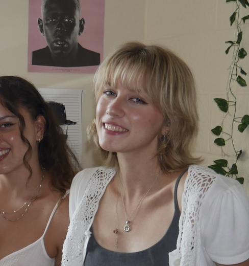

I'm Savannah May, Multimedia Journalism and Political Science Major with a focus in Legal Studies.
Blog post
Availability Bias: Is your life driven by fear-based media?
How media coverage plays a role in our everyday lives and the decisions we make day to day.
Read
Video
Day in the life of a student at Virginia Tech | productive reset 🏋️♀️📚☕️
Video of a typical day in the life of a busy college student who prioritizes school, fitness, and wellness. As a way of keeping this vlog realistic, I highlight personal efforts I make each day to be the very best version of myself while acknowledging challenges I may face, emphasizing nobody is perfect.
Watch
Audio Slideshow
Student Profile: Audio Slideshow
BLACKSBURG, Va. (March 31, 2025) —Robbie Potter’s video on Kentland Farm aired on local news, a milestone in his media career as a Virginia Tech student filmmaker.
Watch
Podcast
Boil Water Advisory Taking VT Students by Surprise
How digital media became a lifeline in spreading vital information through text alerts, emails, and social media during the Blacksburg and Virginia Tech boil water advisory.
Listen